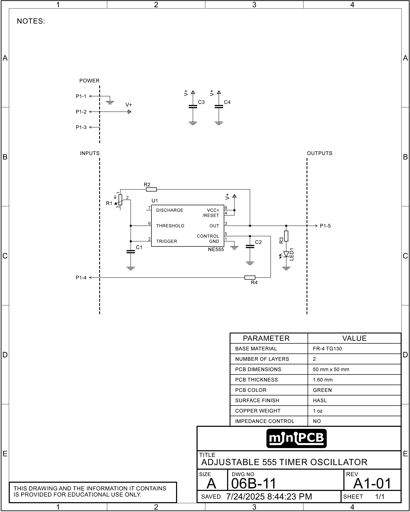

Circuit Overview
| Schematic |  |
| Board Top View |  |
| Key Learning Objectives |
|
| PCB Details |
Part No: 04B-005 Title: Common Emitter Amplifier Pieces per Panel: 4 Board Size: Approx. 50 x 50 mm Panel Size: 100 x 100 mm (V-scored) |